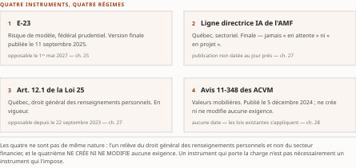

Chapitre 26Le vide fédéral : de C-27 à C-36
Livre III — Encadrer : orchestration en entreprise, cadre réglementaire canadien et terrain financier. Deuxième mouvement — le cadre réglementaire canadien (ch. 25-30). Deuxième chapitre du mouvement, et l'un des plus brefs : il établit un fait négatif et en tire les conséquences
La thèse a été collationnée contre le texte rédigé de sa source avant la rédaction (décision 14 du TOC). Domaine de balayage : une thèse examinée, zéro réalignée — et le bloc ci-dessus a été recollationné caractère à caractère contre le TOC v0.30, sans écart (décision 17). Elle reprend la thèse du Vol. II ch. 10 à sa forme du 16-17 juillet 2026 ; la parenthèse « loi sur la vie privée, non loi IA autonome » condense la proposition incidente de la source — « c'est une loi de protection des renseignements personnels » — sans rien lui ajouter, et elle en reprend la qualification de portée en toutes lettres.
§ 26.0Ouverture : chercher la loi qui n'existe pas
L'architecte qui, à l'été 2026, ouvre le dossier réglementaire d'un programme agentique dans une institution financière fédérale commence en général par chercher la loi. Il cherche le texte fédéral qui nommerait les systèmes d'intelligence artificielle, en établirait les classes de risque, en fixerait les obligations d'évaluation et de journalisation, et lui donnerait une cible de conformité datée.
Ce texte n'existe pas. Il a été déposé, débattu, puis il est mort ; et ce qui a été déposé depuis à sa place ne le remplace pas.
Ce chapitre établit ce fait négatif — que le socle porte positivement, en S-022 ([B]), et non par absence de documentation — et en tire les conséquences d'architecture. Il soutient trois propositions. La première : le vide fédéral n'est pas un accident de calendrier en voie de résorption, mais un état documenté qui dure. La deuxième : le projet de loi C-36, régulièrement présenté comme la réponse fédérale à l'intelligence artificielle, est en réalité une réforme de la protection des renseignements personnels qui porte des volets d'IA — la distinction n'est pas byzantine, elle décide de ce qu'une institution inscrit à son registre d'obligations. La troisième : ce vide persistant, la charge réglementaire effective repose entièrement sur les régulateurs sectoriels — le Bureau du surintendant des institutions financières, l'Autorité des marchés financiers et les Autorités canadiennes en valeurs mobilières —, dont les ch. 25, 27 et 28 traitent respectivement. ⚠ Une réserve borne cette troisième proposition, et le § 26.3 la pose : des quatre instruments qui portent effectivement la charge, l'un relève du droit général québécois et non d'un régulateur sectoriel — l'y ranger serait inexact.
§ 26.1La prorogation du 6 janvier 2025 et la mort de C-27
Le point de départ est une date de procédure parlementaire, et c'est déjà instructif : le cadre fédéral canadien de l'IA n'a pas été voté, il est mort au feuilleton.
Le projet de loi C-27 réunissait deux textes distincts : une loi destinée à refondre le régime fédéral de protection des renseignements personnels, et la Loi sur l'intelligence artificielle et les données (LIAD) — premier et, à ce jour, unique projet fédéral de régulation spécifique des systèmes d'IA. À la prorogation du 6 janvier 2025, C-27 est mort au feuilleton, emportant les deux volets ensemble (Vol. II F-24 → S-022, [B], revalidé par consultation directe).
Lecture de l'auteur il faut mesurer ce qu'a été cet attelage. Le volet IA voyageait dans le même véhicule législatif qu'une réforme de la vie privée ; les deux sont morts ensemble. L'attelage paraît avoir décidé du sort du volet IA — ce que le socle établit : la concomitance. Ce qu'il n'établit pas : la causalité, ni les motifs politiques de la prorogation, ni le contenu des obligations que la loi aurait imposées. ⚠ Ce dernier point n'est pas anodin : la somme ne compare donc ce vide à rien, faute de savoir ce qui aurait été comblé.
Ce qu'il faut retenir, c'est la durée. Du 6 janvier 2025 au 27 juillet 2026, gel de la somme, il s'écoule dix-huit mois et vingt et un jours sans qu'aucun texte fédéral ne vienne réguler les systèmes d'IA en tant que tels. ⚠ Ce n'est pas un intervalle : c'est l'état stable du droit fédéral canadien sur toute la période que couvre la somme.
Le constat se mesure au reste du corpus. La couche protocolaire agent-agent a été lancée, transférée sous gouvernance neutre et portée à sa première spécification stable pendant ce vide (ch. 7) ; les mises en production agentiques canadiennes documentées au ch. 35 s'y sont déroulées ; les deux régimes sectoriels datés du 1ᵉʳ mai 2027 y ont été finalisés. ⚠ Aucun des faits que la somme rapporte n'a eu de loi fédérale d'IA pour cadre.
Lecture de l'auteur l'enseignement pratique de janvier 2025 n'est pas qu'un texte a échoué, mais qu'une planification de conformité adossée à un projet de loi en cours d'examen est une planification adossée à rien. Ce que le socle établit : la mort de C-27 et l'absence de reprise ultérieure du volet IA. Ce qu'il n'établit pas : de règle générale sur la fiabilité des trajectoires législatives. La règle que la somme en tire — ne dater un programme de conformité que sur des textes en vigueur ou publiés en version finale — est une inférence, mais c'est celle que la suite du chapitre valide. ⚠ Elle est aussi le versant fédéral de R-5 du Vol. II : ce qui n'est pas publié ne se décrit pas.
§ 26.2Le ministre de l'IA et le projet de loi C-36
La séquence qui suit paraît, de loin, corriger le tir. En mai 2025, le gouvernement fédéral nomme le premier titulaire d'un portefeuille de l'IA et de l'innovation numérique. Le 15 juin 2026, ce même ministre dépose le projet de loi C-36 (Vol. II F-24 → S-022, [B]). Entre la nomination et le dépôt, treize mois ; entre la prorogation qui a tué C-27 et ce dépôt, dix-sept mois.
Un ministre de l'IA dépose un projet de loi dix-sept mois après la mort du seul texte fédéral d'IA : la lecture par raccourci s'impose d'elle-même, et elle est fausse.
Le titre officiel de C-36 est Protecting Privacy and Consumer Data Act. ⚠ Le texte est une réforme de la protection des renseignements personnels : il modifie la loi fédérale sur la protection des renseignements personnels et les documents électroniques, et prévoit la création d'une commission de sécurité numérique et de protection des données. Il porte, il est vrai, trois volets — un droit à la suppression des renseignements, une protection des données des enfants, et un volet de transparence algorithmique, seul des trois que le socle qualifie d'IA — ⚠ mais il les porte comme composantes d'une loi sur la vie privée, non comme les dispositifs d'une loi IA autonome.
La qualification n'est pas affaire de purisme terminologique : elle décide de ce qu'une institution inscrit à son registre d'obligations. Un responsable de la conformité qui inscrirait C-36 à son plan comme « cadre IA fédéral à venir » construirait son inventaire sur une qualification erronée : il attendrait un régime de conformité propre aux systèmes d'IA et recevrait une réforme de la protection des renseignements personnels.
Deux précisions de statut s'imposent, et elles sont datées. ⚠ Premièrement, C-36 est un projet de loi et non une loi : première lecture le 15 juin 2026 ; à l'étape de la deuxième lecture au 16 juillet 2026, date de consultation du socle, étape reconduite inchangée au 28 juillet 2026 par l'instruction du résidu de G-1 — douze jours sans progression au registre parlementaire officiel. Aucune obligation n'en découle, et la somme ne se prononce pas sur son adoption (R-5 du Vol. II — ne rien anticiper). ⚠ Deuxièmement, la commission qu'il prévoit n'existe pas : sa création est un effet projeté du texte, non un fait.
Que prescrit exactement le volet de transparence algorithmique ? Les sources du socle établissent l'existence des trois volets et la nature générale du texte ; elles n'en établissent pas le contenu article par article, et le texte demeure susceptible d'amendement. Absence de documentation dans le corpus, degré 3 de l'échelle R-14 du Vol. III — non un fait négatif vérifié. La question reste ouverte ; aucune inférence n'est proposée ici — ⚠ et l'instruction du 28 juillet 2026 ne l'a pas comblée : elle a reconduit l'étape parlementaire et la qualification de portée du texte, non son contenu.
§ 26.3Conséquences : le vide persiste, la charge est sectorielle
La proposition centrale peut maintenant être énoncée dans les termes exacts du socle. La LIAD ne sera pas ravivée telle quelle, et le vide fédéral sur la régulation spécifique de l'IA persiste (Vol. II F-24 → S-022, [B]). Une formule résume le constat, et la somme la cite en langue originale : « Canada remains the only G7 nation without a binding AI regulatory framework » — AIMag, juin 2026. ⚠ Cette formule est citée comme illustration d'un constat de presse, jamais comme source d'un fait central ; le fait central — la persistance du vide — est porté par l'entrée elle-même. ⚠ Et une divergence d'attribution est signalée à sa source : l'entrée l'attribue à « des juristes », le rapport de revalidation du Vol. II à ce seul périodique ; le corps retient l'attribution la plus restrictive, et il la nomme — une affirmation ne s'anonymise pas (décision 15 du TOC).
Il faut cependant énoncer avec autant de soin ce que ce vide n'est pas, car la formule prête à contresens. Le Canada n'est pas un espace de non-droit pour les systèmes agentiques. Le vide est spécifique : il porte sur l'absence d'un régime fédéral contraignant qui régulerait les systèmes d'IA en tant que tels. Les Autorités canadiennes en valeurs mobilières l'énoncent pour leur champ : leurs indications ne créent ni ne modifient aucune exigence, et les lois sur les valeurs mobilières existantes s'appliquent aux systèmes d'IA (ch. 28). ⚠ L'énoncé de l'avis est un rendu français — l'instrument est rédigé en anglais et le socle n'en porte pas le libellé d'origine : il ne se cite pas entre guillemets de verbatim, et la borne « valeurs mobilières » ne s'en retire pas.
Lecture de l'auteur le même raisonnement vaut par construction pour les autres branches du droit général — protection des renseignements personnels, droit des contrats, responsabilité civile —, qu'aucun régime d'IA n'est venu écarter. Ce que le socle établit : ce point pour les seules valeurs mobilières. Ce qu'il n'établit pas : sa généralisation.
Lecture de l'auteur ⚠ une conséquence de périmètre se pose tôt, et elle demeure une hypothèse de travail. Ce que le socle établit : que C-36 modifie la loi fédérale sur les renseignements personnels — une loi dont l'objet est le traitement des renseignements personnels. Ce qu'il n'établit pas : le périmètre d'application des volets d'IA du projet, et le § 26.2 dit pourquoi. Mais la nature du véhicule autorise au moins une lecture prudente : un régime greffé sur une loi de protection des renseignements personnels a vocation à saisir les traitements de renseignements personnels, non l'ensemble des décisions d'un système agentique. Un agent qui orchestre un rapprochement comptable, une chaîne de messages de paiement interbancaires ou une supervision d'infrastructure ne manipule pas nécessairement de renseignements personnels ; un agent de pré-adjudication hypothécaire, lui, en manipule par construction — et le ch. 35 § 35.1 en documente un cas canadien. ⚠ L'inférence porte sur la logique du véhicule législatif, pas sur le texte de C-36, dont le libellé n'est pas au socle : elle est indiquée comme hypothèse de travail à vérifier, jamais comme fondement d'une position de conformité.
Pour l'institution financière fédérale, la conséquence est un déplacement complet de la charge vers les régulateurs sectoriels, et ce déplacement est daté.
| Instrument | État | Date opposable | Chapitre |
|---|---|---|---|
| E-23 — risque de modèle, fédéral prudentiel | version finale publiée le 11 septembre 2025 | 1ᵉʳ mai 2027 | ch. 25 |
| Ligne directrice IA de l'AMF — Québec, sectoriel | ⚠ finale, jamais « en attente » ni « en projet » (réserve Vol. II F-25 → S-023) — ⚠ sa publication n'est pas datée au jour près : aucune des deux dates autrefois arbitrées ne figure aux pages officielles, et la somme écrit avril 2026 en déclarant ses trois états (ch. 27 § 27.1) |
1ᵉʳ mai 2027 | ch. 27 |
| Art. 12.1 de la Loi 25 — Québec, droit général des renseignements personnels | en vigueur | 22 septembre 2023 — opposable depuis près de trois ans | ch. 27 |
| Avis 11-348 des ACVM — valeurs mobilières | publié le 5 décembre 2024 ; ne crée ni ne modifie aucune exigence (rendu français) | aucune — les lois sur les valeurs mobilières existantes s'appliquent | ch. 28 |
Tableau 26.1 — Les quatre instruments qui portent effectivement la charge, au gel du 27 juillet 2026. ⚠ L'un d'eux relève du droit général québécois, non d'un régulateur sectoriel — l'y ranger serait inexact.
Un mot sur la portée d'E-23, et la formulation est imposée. E-23 ne nomme ni l'agentique ni les agents ; sa définition de « modèle » englobe les méthodes d'IA et d'apprentissage automatique, d'où une couverture implicite que les analystes juridiques canadiens tiennent pour acquise (PRD Vol. II §8.2.4). La couverture est une inférence d'analystes, non une attente du Bureau, et le ch. 25 § 25.3 en porte le développement ; le présent chapitre ne fait que la renvoyer. ⚠ Et on écrit « attendu par E-23 », jamais « exigé » (PRDPlan Vol. II §4.4).
Un calcul suffit à mesurer la situation d'une institution au gel de la somme. Du 27 juillet 2026 au 1ᵉʳ mai 2027, il reste neuf mois et quatre jours avant l'entrée en vigueur simultanée d'E-23 et de la ligne directrice de l'AMF. L'article 12.1, lui, est opposable depuis près de trois ans.
Lecture de l'auteur l'ordre de priorité qu'un architecte devrait en tirer est l'inverse exact de celui que suggère l'actualité législative. Ce que le socle établit : trois faits — le vide fédéral persiste, un projet de loi fédéral de vie privée est en deuxième lecture, et quatre instruments sont soit en vigueur, soit finalisés avec une date d'entrée en vigueur ferme. Ce qu'il n'établit pas : d'ordre de priorité entre eux. Celui-ci est une inférence, et elle est néanmoins difficile à contester : la veille sur un texte non adopté, dont le contenu détaillé n'est pas au socle et qui n'est pas une loi d'IA, ne saurait mobiliser les ressources qu'appellent quatre instruments datés dont l'un est déjà opposable. La conséquence d'architecture — traduire ces exigences sectorielles en cadres déterministes — est l'objet du ch. 29, pivot du Livre.
Synthèse : ce que le chapitre lègue à la somme
Section de sortie sans homologue direct dans la source — construction d'éditeur.
- Un fait négatif, daté et mesuré. Pas de régime fédéral contraignant propre aux systèmes d'IA ; dix-huit mois et vingt et un jours au gel de la somme. Aucun chapitre aval ne le redémontre, et la table de traduction du ch. 29 § 29.1 n'en tire aucune contrainte — un vide n'en produit pas.
- La qualification de C-36, et ce qu'elle interdit. Loi de vie privée portant des volets d'IA, non loi IA autonome. L'inscrire comme « cadre IA fédéral à venir » est une erreur de registre d'obligations, et le ch. 30 n'en tire aucun élément du maillage international.
- Le vide est spécifique, non général. Le droit général s'applique. ⚠ Le socle ne l'établit que pour les valeurs mobilières (ch. 28) ; la généralisation est une lecture.
- La table des quatre instruments, et son ordre de priorité. ⚠ Un seul y est déjà opposable, et ce n'est pas celui qu'on attend. Le ch. 27 le développe ; les quatre instruments forment toute la table de traduction du ch. 29, qui n'en tire aucun autre texte.
Ce que le chapitre ne lègue pas. Il ne dit pas que C-36 sera adopté, ni qu'il ne le sera pas : le socle documente une étape parlementaire, pas une issue. Il ne dit pas ce que prescrit le volet de transparence algorithmique. Il ne dit pas que le vide serait une lacune de protection. Et ce que la loi morte aurait exigé n'est pas au socle : la somme ne le compare donc à rien.
L'absence d'une loi fédérale sur l'IA n'est pas une permission. C'est une redistribution de la charge.
